브금은 자작입니다.
만화는 렉카
라이트모드용 브금
다크모드용 브금
같은 모티브 멜로디로 두가지버전 편곡해봄
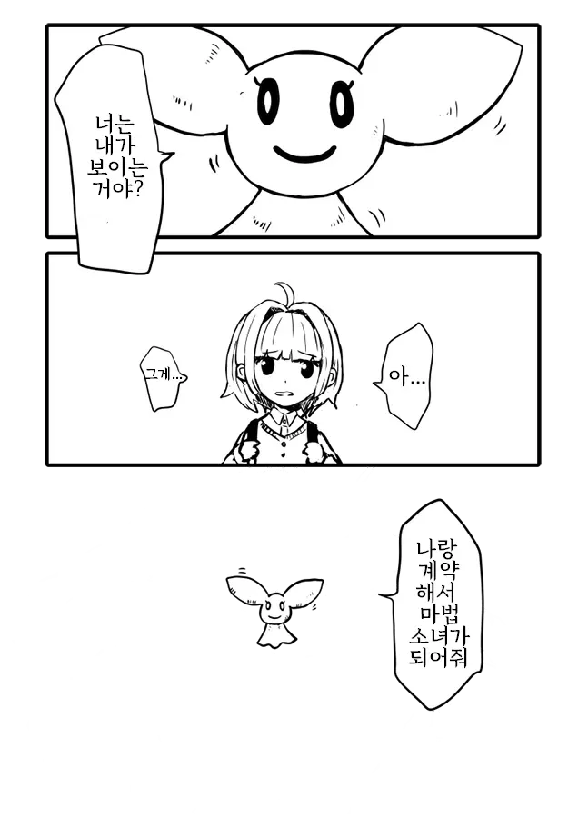
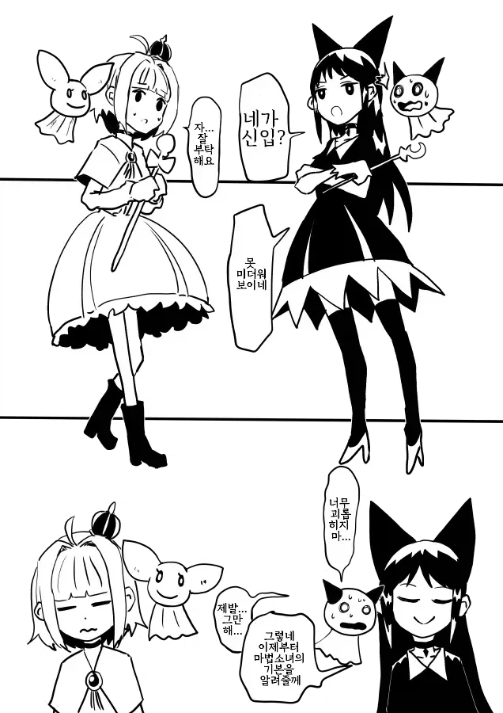
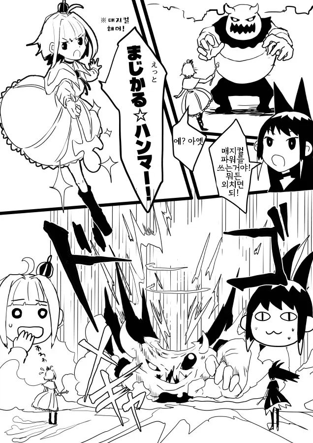
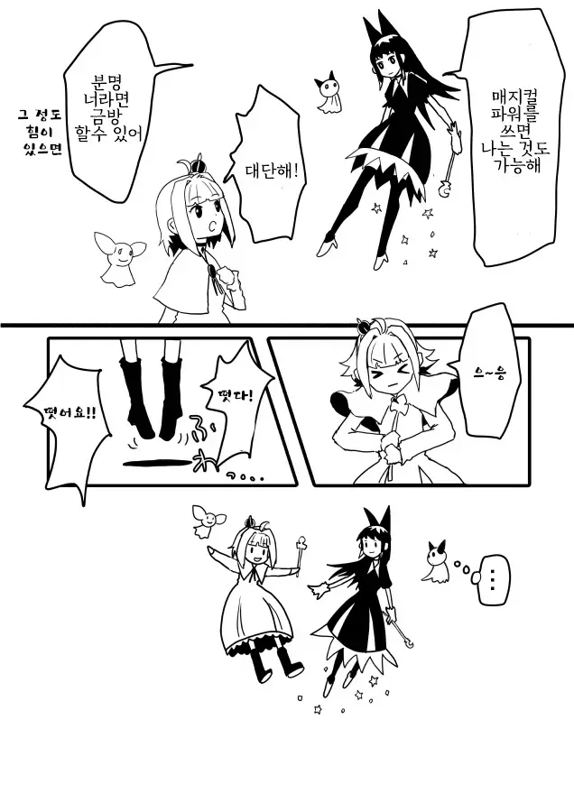
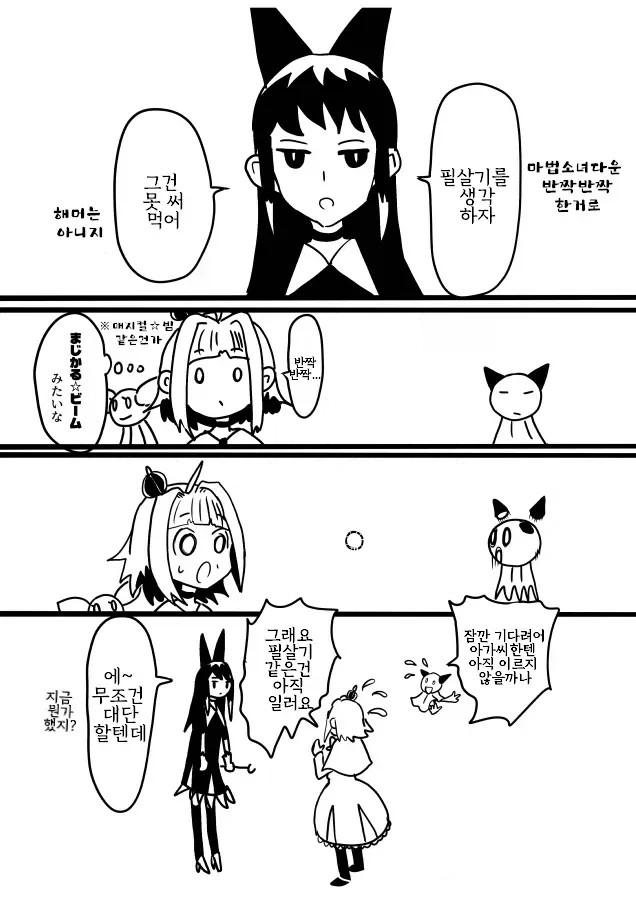
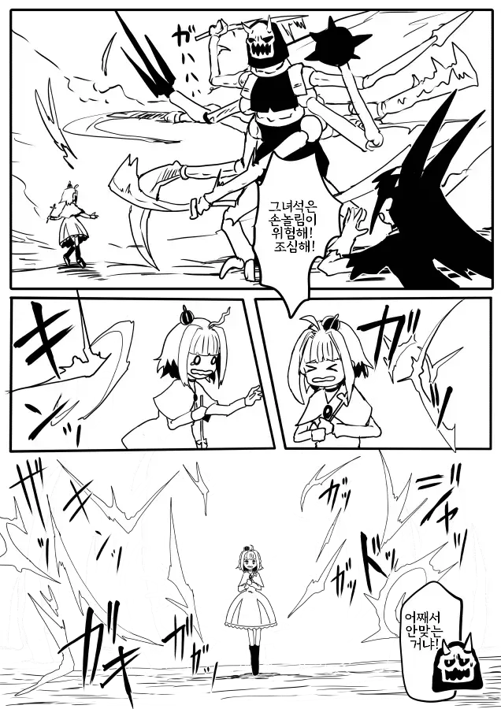
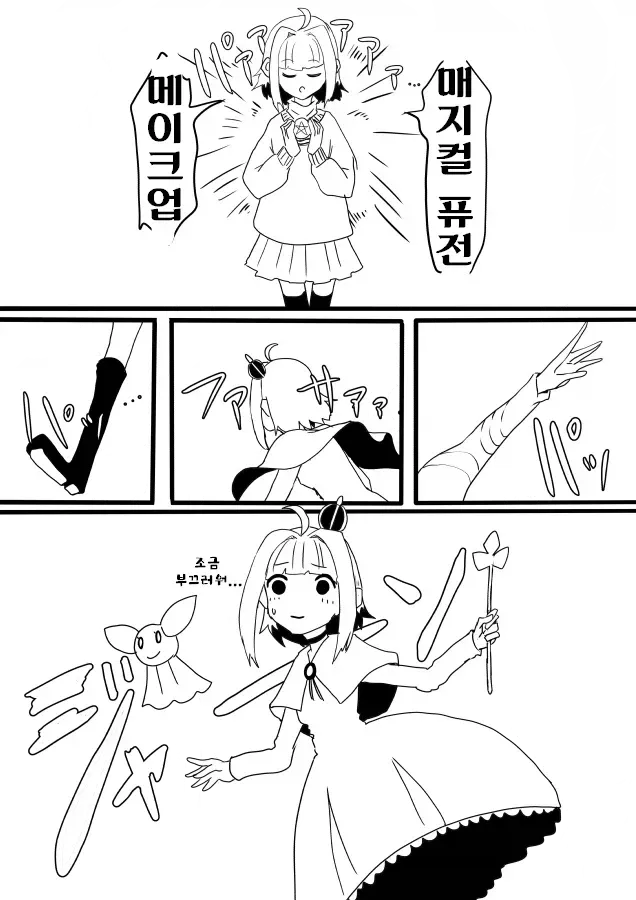
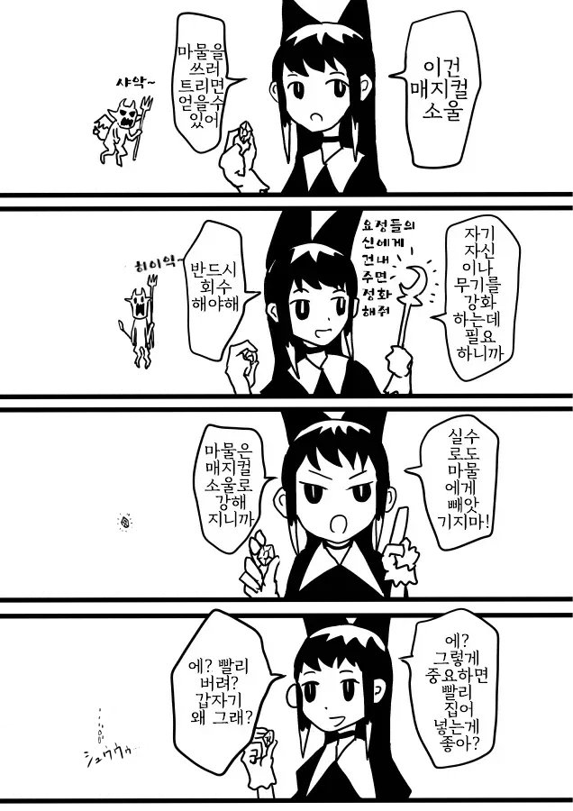
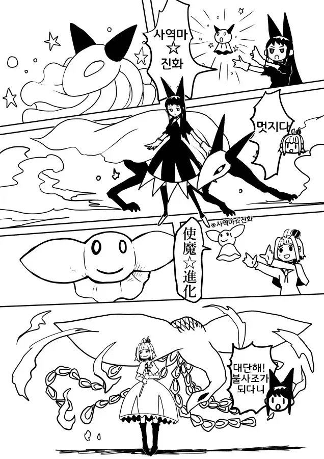
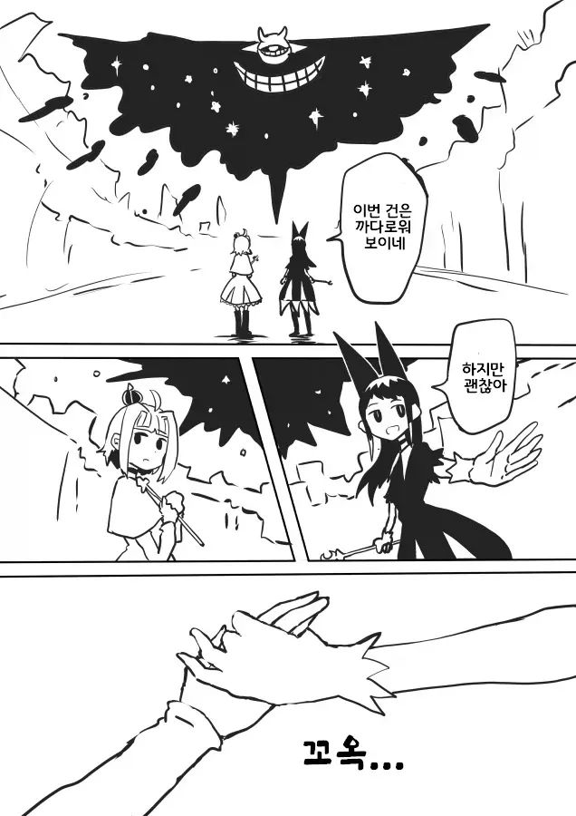
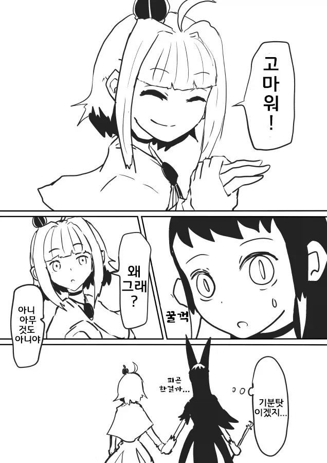
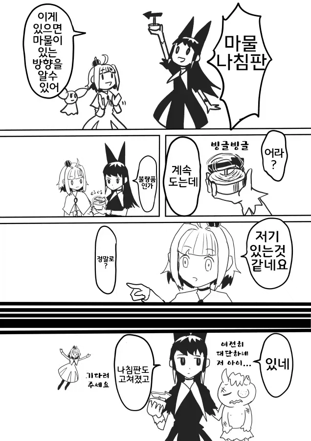
브금은 자작입니다.
만화는 렉카
라이트모드용 브금
다크모드용 브금
같은 모티브 멜로디로 두가지버전 편곡해봄












색상반전 누르셈 맨 아래


두려워말라
ㄷㄷ
겉모습이랑 다르게 착한 놈인줄 알았는데 조금씩 잡아먹히는건가 ㄷㄷ
이런거 보면 신기해 진짜 ㅋㅋㅋ
백색과 투명색의 차이인가?
되게 표현방식이 좋네 이게뭐야 하는사람들은 개드립 맨아래 색상반전 다크모드키고 다시보셈
원래 색상반전 쓰고 있어서 굳이 브금을 두개나 깔 필요가 있나 했는데 색상반전하면 바뀌는거였구나 ㅋㅋ
이 만화 더 나온 거 없나? 저 여자애 나중에 어떻게 되나 맨날 궁금함 ㅋㅋ
오 색상반전 신박하네 ㅋㅋ
이거 근데 예전에 눈깔괴물로 성녀어쩌구(외계인) 그 작가껀가
오
와 신선하네 ㅋㅋㅋㅋㅋㅋ
난 원래 검은색이라 먼소리하나 싶었음....
개신기하넼ㅋㅋ
대박
그림을 잘라내서 표현한건가?
아 브금 개깜놀했네 시발
알파빼서 작업하는건가보네 신기방기
이게 뭐야 다크모드 안쓰는 사람들은 저 검정 괴물이 안보이는거야?
예에전에 공포 만화에서 처음 본 기법이었는데 귀신 보는 형사가 사건 조사하고 피해자 남편이 증언하는 내용
형사는 남편쪽을 존나 의심하는데 사실 색상 반전해보면 귀신들이 다 알려주더라
전체 다가져와야지 친구